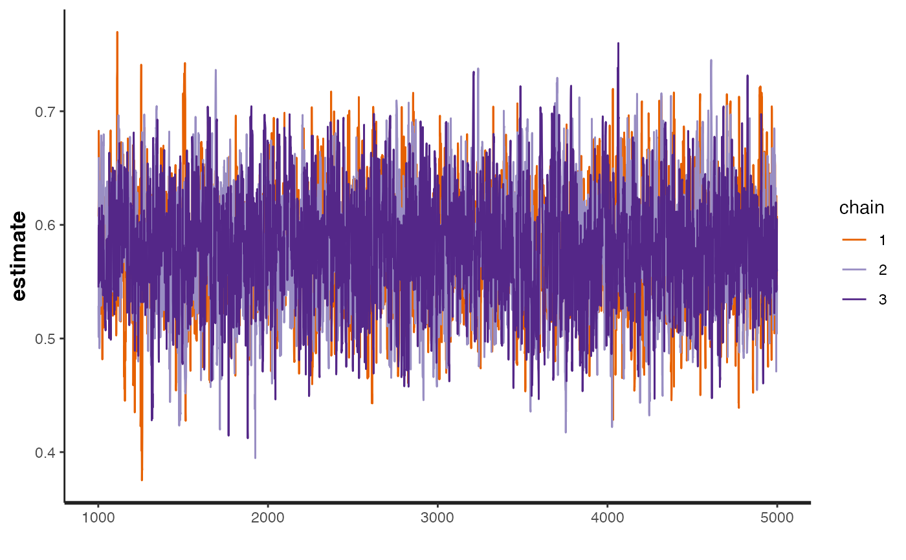

Bayesian inverse variance weighted model with a choice of prior distributions fitted using RStan.
Source:R/mr_ivw_stan.R
mr_ivw_stan.RdBayesian inverse variance weighted model with a choice of prior distributions fitted using RStan.
Arguments
- data
A data of class
mr_format.- prior
An integer for selecting the prior distributions;
1selects a non-informative set of priors;2selects weakly informative priors;3selects a pseudo-horseshoe prior on the causal effect.
- n.chains
Numeric indicating the number of chains used in the HMC estimation in rstan, the default is
3chains.- n.burn
Numeric indicating the burn-in period of the Bayesian HMC estimation. The default is
1000samples.- n.iter
Numeric indicating the number of iterations in the Bayesian MCMC estimation. The default is
5000iterations.- seed
Numeric indicating the random number seed. The default is
12345.- ...
Additional arguments passed through to
rstan::sampling().
Value
An object of class rstan::stanfit.
References
Burgess, S., Butterworth, A., Thompson S.G. Mendelian randomization analysis with multiple genetic variants using summarized data. Genetic Epidemiology, 2013, 37, 7, 658-665 doi:10.1002/gepi.21758 .
Stan Development Team (2020). "RStan: the R interface to Stan." R package version 2.19.3, https://mc-stan.org/.
Examples
if (requireNamespace("rstan", quietly = TRUE)) {
suppressWarnings(ivw_fit <- mr_ivw_stan(bmi_insulin, refresh = 0L))
print(ivw_fit)
rstan::traceplot(ivw_fit)
}
#> Inference for Stan model: mrivw.
#> 3 chains, each with iter=5000; warmup=1000; thin=1;
#> post-warmup draws per chain=4000, total post-warmup draws=12000.
#>
#> mean se_mean sd 2.5% 25% 50% 75% 97.5% n_eff
#> estimate 0.58 0.00 0.05 0.48 0.54 0.58 0.61 0.68 2739
#> lp__ -393.05 0.02 0.73 -395.07 -393.22 -392.77 -392.58 -392.53 2318
#> Rhat
#> estimate 1
#> lp__ 1
#>
#> Samples were drawn using NUTS(diag_e) at Mon Aug 19 14:09:21 2024.
#> For each parameter, n_eff is a crude measure of effective sample size,
#> and Rhat is the potential scale reduction factor on split chains (at
#> convergence, Rhat=1).
